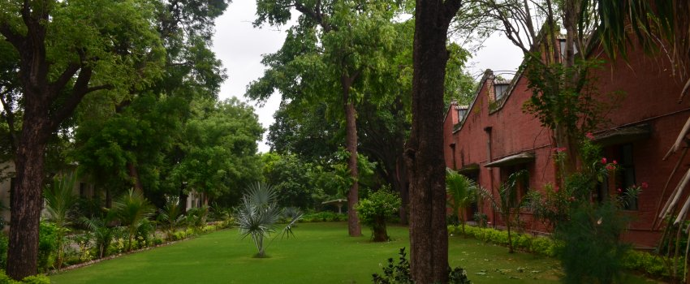
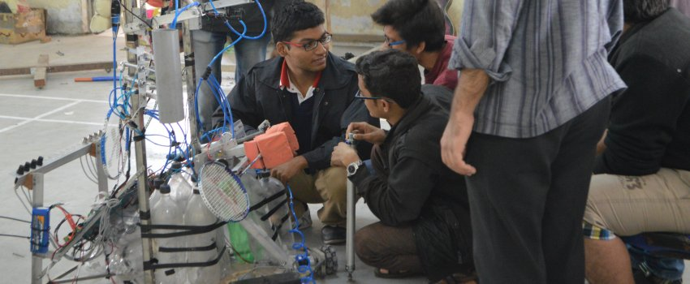

LDCE Principal office
The Office of L.D. College typically refers to the administrative hub
of L.D. College of Engineering, an esteemed institution located in
Ahmedabad, India. Established in 1948, L.D. College of Engineering
(Lalbhai Dalpatbhai College of Engineering) is one of the oldest
engineering colleges in Gujarat and holds a prominent place in the
educational landscape of India.
Applied Mechanics
The Department of Applied Mechanics is a vital offshoot of Civil
Engineering Program at L. D. College of Engineering. Applied Mechanics
department has a distinguished and technically well-versed faculty
imbued with a sense of commitment and sincerity. As the HOD of the
department it is a matter of immense pride to bring to you the
multifaceted activities and achievements of the department. We are a
department of 16 faculty members, 2 of these holding Doctorates, 7 of
these are pursuing Doctorate of Philosophy and the rest have a
Master’s Degree.
Computer Engineering

Computer engineering is the fastest developing discipline in the
world. It integrates several fields of electrical engineering and
computer science required to develop computer hardware and software.
Computer engineers embed computers in other machines and systems,
build networks to transfer data and develop ways to make computers,
faster, smaller and more capable. The major technical areas of
Computer Engineering are : Cybersecurity, Networking, Database
Handling, Artificial Intelligence, Design Automation, Computer
software, Embedded Systems.
Information Technology
To shape the young minds of aspiring Information Technology engineers
to become the front runner in the sustainable technological growth of
our country, conserving its rich cultural heritage and catering to its
socioeconomic needs.
1. Bringing innovative approach in teaching-learning process to
produce competent Information Technology engineers.
2. Provide
opportunities and necessary exposure to the young engineers to develop
themselves into responsible professionals.
3. Infusing lifelong
learning ability in the aspiring minds with the view of making them
sensible towards their social responsibilities.
Mechanical Engineering

Mechanical Engineering encompasses areas such as energy, fluid
mechanics, dynamics, combustion, vibration, design, manufacturing
processes, systems modeling and simulation, mechatronics, robotics,
mechanics of material, rapid prototyping and composites. It deals with
all aspects of the conversion of thermal energy into useful work and
the machines that make this possible. Mechanical engineering is also
referred to as the ‘mother’ of all engineering branches.